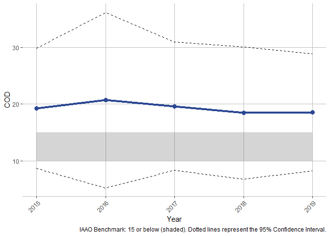
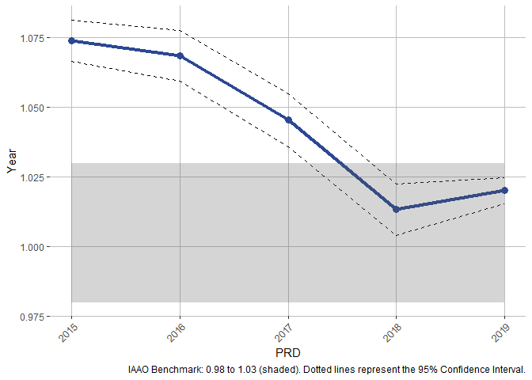
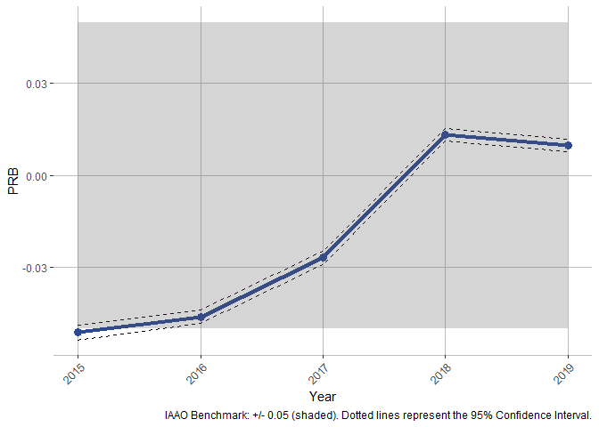
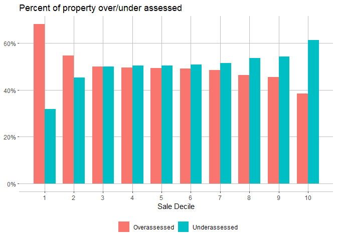

This package analyzes property tax regressivity and produces various tables and figures for a sales ratio study.
Installation
You can install the development version from GitHub with:
# install.packages("devtools") devtools::install_github("erhla/cmfproperty")
Example
First import cmfproperty.
library(cmfproperty)
Then, preprocess your data with reformat_data and call make_report. The report will be created in your current working directory by default unless specified otherwise with parameter output_dir. The report from the example below can be found here.
df <- cmfproperty::example_data ratios <- cmfproperty::reformat_data( df, sale_col = "SALE_PRICE", assessment_col = "ASSESSED_VALUE", sale_year_col = "SALE_YEAR", ) cmfproperty::make_report(ratios, jurisdiction_name = "Cook County, Illinois" ) #to see the evaluated output---look at Report Evaluation Output at the end of this readme.
Let’s break down each of the steps above. First, what kind of data do you need?
In order to conduct a sales ratio study, data is required to have at least three columns: Sale Year, Sale Price, and Assessed Value. We want to compare the sale price to the assessed value at the time of sale.
head(cmfproperty::example_data) #> PIN SALE_YEAR SALE_PRICE ASSESSED_VALUE #> 1 17273100931118 2015 53000 33860 #> 2 18013090421010 2018 80000 60390 #> 3 12111190201042 2018 118000 108300 #> 4 13093160601015 2017 125500 87200 #> 5 14322110150000 2018 3705000 3670740 #> 6 27021200080000 2016 345000 267280
In most cases, producing this data will require a sales roll consisting of all properties which sold in a given year and an assessment roll which consists of all properties assessed in a given year. For example, the example_data above was produced from the Cook County Open Data Portal. Sales were found here and assessments were found here. These files can be downloaded manually or via RSocrata:
library(data.table) library(tidyverse) sales <- fread("~/../Downloads/Cook_County_Assessor_s_Residential_Sales_Data.csv", colClasses = "character") #from 2013 to 2019 assessments <- fread("~/../Downloads/Cook_County_Assessor_s_Residential_Assessments.csv", colClasses = "character") #from 2015 to 2019 sales <- sales %>% select(PIN, `Sale Year`, `Sale Price`, `Deed No.`) %>% filter(`Sale Year` > 2014) assessments <- assessments %>% select(PIN, YEAR, CERTIFIED) # Filtering data to remove duplicate sales and low value sales sales <- sales %>% distinct(`Deed No.`, .keep_all = TRUE) %>% select(-`Deed No.`) sales <- sales %>% filter(as.numeric(`Sale Price`) > 2500) # Join assessments to sales based on PIN (a unique identifier) and Year. joined <- sales %>% left_join(assessments, by=c("PIN"="PIN", "Sale Year"="YEAR")) joined <- joined %>% rename(SALE_YEAR = `Sale Year`, SALE_PRICE = `Sale Price`, ASSESSED_VALUE = CERTIFIED) fwrite(joined, paste0("~/../Downloads/example_data.csv"))
Then, we need to let the package know which of our columns represent sales, assessments, and sale year.
df <- cmfproperty::example_data ratios <- cmfproperty::reformat_data( df, sale_col = "SALE_PRICE", assessment_col = "ASSESSED_VALUE", sale_year_col = "SALE_YEAR", ) #> [1] "Filtered out non-arm's length transactions" #> [1] "Inflation adjusted to 2019" head(as.data.frame(ratios)) #just to print all the columns #> PIN SALE_YEAR SALE_PRICE ASSESSED_VALUE TAX_YEAR RATIO #> 1 17273100931118 2015 53000 33860 2015 0.6388679 #> 2 18013090421010 2018 80000 60390 2018 0.7548750 #> 3 12111190201042 2018 118000 108300 2018 0.9177966 #> 4 13093160601015 2017 125500 87200 2017 0.6948207 #> 5 14322110150000 2018 3705000 3670740 2018 0.9907530 #> 6 27021200080000 2016 345000 267280 2016 0.7747246 #> arms_length_transaction SALE_PRICE_ADJ ASSESSED_VALUE_ADJ #> 1 1 59209.48 37827.04 #> 2 1 82313.03 62136.05 #> 3 1 121411.71 111431.26 #> 4 1 132854.54 92310.09 #> 5 1 3812122.01 3776871.45 #> 6 1 376080.37 291358.73
reformat_data also add the additional calculated fields needed to complete the study:
- RATIO, which is the Sales Ratio (Sale Price / Assessed Value)
- arms_length_transaction, an indicator that the property was sold in an arm’s length transaction (calculated using the IAAO standard)
- SALE_PRICE_ADJ, inflation adjusted sale price (adjusted to the last year of available data)
- ASSESSED_VALUE_ADJ, inflation adjusted assessed value (adjusted to the last year of available data)
Note: ratios refers to data which has been processed by reformat_data
Other features
Calculate Regressivity Statistics
This is the basic framework to conduct a sales ratio study:
df <- cmfproperty::example_data ratios <- cmfproperty::reformat_data( df, sale_col = "SALE_PRICE", assessment_col = "ASSESSED_VALUE", sale_year_col = "SALE_YEAR", ) #> [1] "Filtered out non-arm's length transactions" #> [1] "Inflation adjusted to 2019" stats <- cmfproperty::calc_iaao_stats(ratios) head(stats) #> N COD COD_SE PRD PRD_SE PRB PRB_SE q1_ratio median_ratio #> 1 51879 19.2260 5.3845 1.0740 0.0038 -0.0514 0.0012 0.7758364 0.9093448 #> 2 62852 20.7060 7.8864 1.0686 0.0046 -0.0462 0.0011 0.7705720 0.9001375 #> 3 65961 19.6248 5.7550 1.0454 0.0049 -0.0269 0.0011 0.7428108 0.8732099 #> 4 65298 18.4255 5.9601 1.0133 0.0047 0.0133 0.0010 0.7470336 0.8856039 #> 5 62041 18.5636 5.2609 1.0201 0.0024 0.0098 0.0010 0.7681042 0.9035000 #> q3_ratio q1_sale median_sale q3_sale q1_assessed_value median_assessed_value #> 1 1.057180 148000 230000 375000 136670.0 213430 #> 2 1.060422 148000 229900 365000 133940.0 209150 #> 3 1.031267 155000 235000 365000 136960.0 209380 #> 4 1.021504 159642 239900 370000 132382.5 210645 #> 5 1.036399 164900 245000 372000 140220.0 217690 #> q3_assessed_value Year #> 1 331235.0 2015 #> 2 321720.0 2016 #> 3 316300.0 2017 #> 4 331257.5 2018 #> 5 336480.0 2019
Visualize Regressivity Statistics
iaao_rslt <- iaao_graphs(stats, ratios, min_reporting_yr = 2015, max_reporting_yr = 2019, "Cook County, Illinois")
iaao_rslt[[2]]

iaao_rslt[[4]]

iaao_rslt[[6]]

Advanced Regressivity Statistics
cmfproperty::regression_tests(ratios) #> Model Value Test T Statistic Conclusion #> 1 paglin72 3.470212e+04 > 0 135.385620 Regressive #> 2 cheng74 9.136623e-01 < 1 1348.353690 Regressive #> 3 IAAO78 -1.430746e-07 < 0 -97.596795 Regressive #> 4 kochin82 9.359248e-01 < 1 1348.353690 Regressive #> 5 bell84 2.031487e+04 > 0 77.266036 Regressive #> 6 -1.811579e-08 < 0 -157.626702 Regressive #> 7 sunderman90 1.111135e+04 > 0 5.063213 Regressive #> Model Description #> 1 AV ~ SP #> 2 ln(AV) ~ ln(SP) #> 3 RATIO ~ SP #> 4 ln(SP) ~ ln(AV) #> 5 AV ~ SP + SP^2 #> 6 AV ~ SP + SP^2 #> 7 AV ~ SP + low + high + low * SP + high * SP
Regressivity Plots
plot_ls <- cmfproperty::plots(ratios, min_reporting_yr = 2015, max_reporting_yr = 2019, jurisdiction_name = "Cook County, Illinois") #> Joining, by = "TAX_YEAR"
In 2019, the most expensive homes (the top decile) were assessed at 87.1% of their value and the least expensive homes (the bottom decile) were assessed at 102.0%. In other words, the least expensive homes were assessed at 1.17 times the rate applied to the most expensive homes. Across our sample from 2015 to 2019, the most expensive homes were assessed at 83.4% of their value and the least expensive homes were assessed at 109.4%, which is 1.31 times the rate applied to the most expensive homes.
plot_ls[[2]]

In Cook County, Illinois, 68% of the lowest value homes are overassessed and 39% of the highest value homes are overassessed.
plot_ls[[4]]

Monte Carlo Analysis
m_rslts <- monte_carlo_graphs(ratios) gridExtra::grid.arrange(m_rslts[[1]], m_rslts[[2]], m_rslts[[3]], m_rslts[[4]], m_rslts[[5]], m_rslts[[6]], nrow = 3)

Report Evaluation Output
df <- cmfproperty::example_data ratios <- cmfproperty::reformat_data( df, sale_col = "SALE_PRICE", assessment_col = "ASSESSED_VALUE", sale_year_col = "SALE_YEAR", ) #> [1] "Filtered out non-arm's length transactions" #> [1] "Inflation adjusted to 2019" cmfproperty::make_report(ratios, jurisdiction_name = "Cook County, Illinois", output_dir = "C:/Users/erhla/Desktop/") #> #> #> processing file: report.Rmd #> | | | 0% | |.. | 3% #> inline R code fragments #> #> | |..... | 6% #> label: options (with options) #> List of 2 #> $ echo : logi FALSE #> $ out.width: chr "175px" #> #> | |....... | 10% #> ordinary text without R code #> #> | |......... | 13% #> label: setup (with options) #> List of 1 #> $ include: logi FALSE #> Joining, by = "TAX_YEAR" #> | |........... | 16% #> inline R code fragments #> #> | |.............. | 19% #> label: mainbinnedscatter #> | |................ | 23% #> inline R code fragments #> #> | |.................. | 26% #> label: over under bar #> | |.................... | 29% #> ordinary text without R code #> #> | |....................... | 32% #> label: iaao graphs #> | |......................... | 35% #> inline R code fragments #> #> | |........................... | 39% #> label: cod graph #> | |............................. | 42% #> inline R code fragments #> #> | |................................ | 45% #> label: prd graph #> | |.................................. | 48% #> inline R code fragments #> #> | |.................................... | 52% #> label: prb graph #> | |...................................... | 55% #> inline R code fragments #> #> | |......................................... | 58% #> label: standardstable (with options) #> List of 1 #> $ results: chr "asis" #> #> | |........................................... | 61% #> ordinary text without R code #> #> | |............................................. | 65% #> label: results_tbl_values (with options) #> List of 1 #> $ results: chr "asis" #> #> | |............................................... | 68% #> ordinary text without R code #> #> | |.................................................. | 71% #> label: all_asr_plot (with options) #> List of 1 #> $ fig.height: num 7 #> | |.................................................... | 74% #> ordinary text without R code #> #> | |...................................................... | 77% #> label: sale_ratio_decile_tbl (with options) #> List of 1 #> $ results: chr "asis" #> #> | |........................................................ | 81% #> ordinary text without R code #> #> | |........................................................... | 84% #> label: monte carlo #> | |............................................................. | 87% #> ordinary text without R code #> #> | |............................................................... | 90% #> label: monte carlo graphs (with options) #> List of 1 #> $ fig.height: num 5 #> | |................................................................. | 94% #> ordinary text without R code #> #> | |.................................................................... | 97% #> label: vertical equity methods (with options) #> List of 1 #> $ results: chr "asis" #> #> | |......................................................................| 100% #> ordinary text without R code #> output file: report.knit.md #> "C:/Program Files/RStudio/bin/pandoc/pandoc" +RTS -K512m -RTS report.utf8.md --to html4 --from markdown+autolink_bare_uris+tex_math_single_backslash+smart --output pandoc8ec32e81839.html --email-obfuscation none --self-contained --standalone --section-divs --table-of-contents --toc-depth 2 --variable toc_float=1 --variable toc_selectors=h1,h2 --variable toc_collapsed=1 --variable toc_smooth_scroll=1 --variable toc_print=1 --template "C:\Users\erhla\Documents\R\win-library\3.6\rmarkdown\rmd\h\default.html" --no-highlight --variable highlightjs=1 --number-sections --variable "theme:sandstone" --include-in-header "C:\Users\erhla\AppData\Local\Temp\Rtmpm65GBs\rmarkdown-str8ec7a7c416.html" --mathjax --variable "mathjax-url:https://mathjax.rstudio.com/latest/MathJax.js?config=TeX-AMS-MML_HTMLorMML" --lua-filter "C:/Users/erhla/Documents/R/win-library/3.6/rmarkdown/rmd/lua/pagebreak.lua" --lua-filter "C:/Users/erhla/Documents/R/win-library/3.6/rmarkdown/rmd/lua/latex-div.lua" --filter "C:/Program Files/RStudio/bin/pandoc/pandoc-citeproc.exe" #> #> Output created: C:/Users/erhla/Desktop//Cook County, Illinois.html #> [1] "Report created at C:/Users/erhla/Desktop//Cook County, Illinois.html"